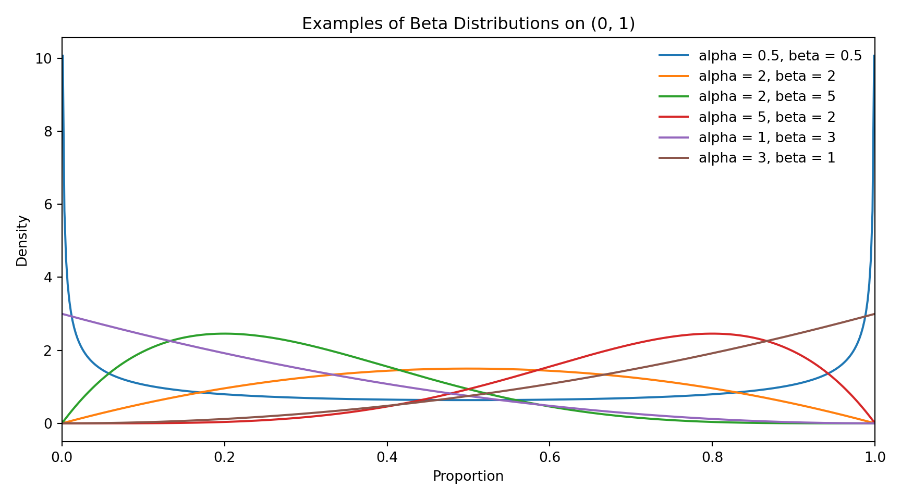
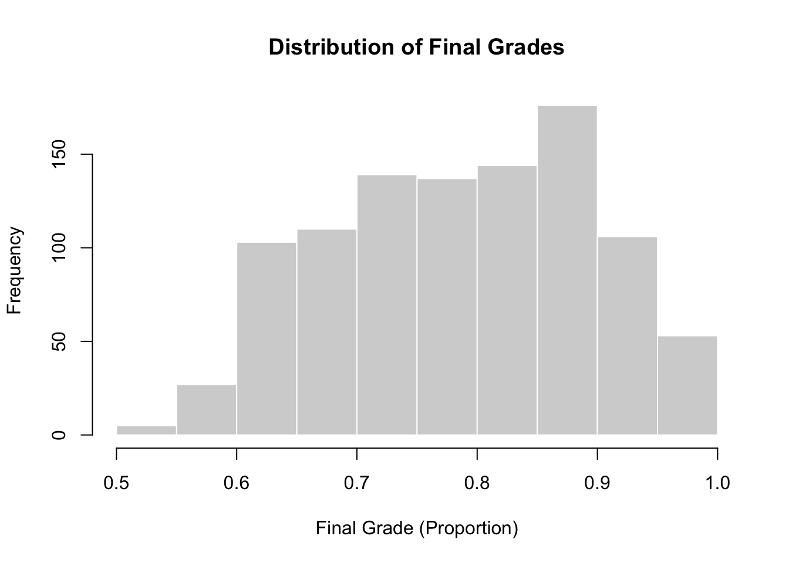
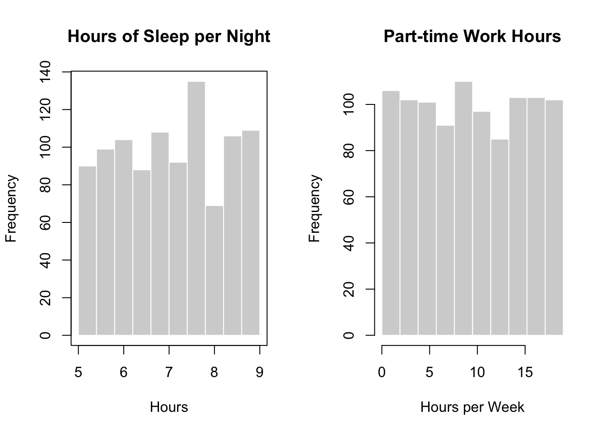
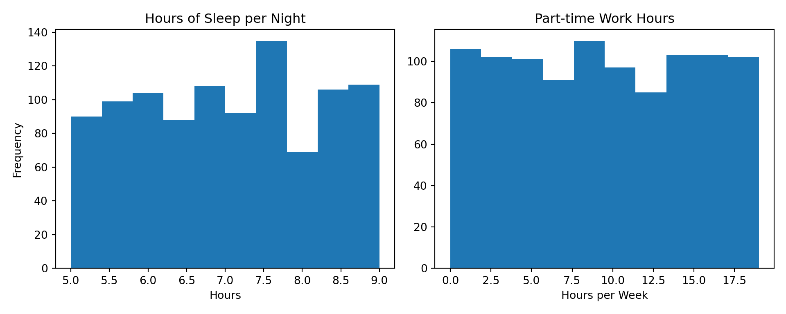
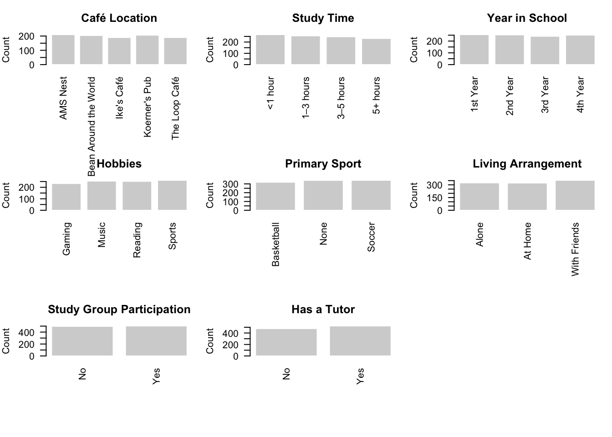
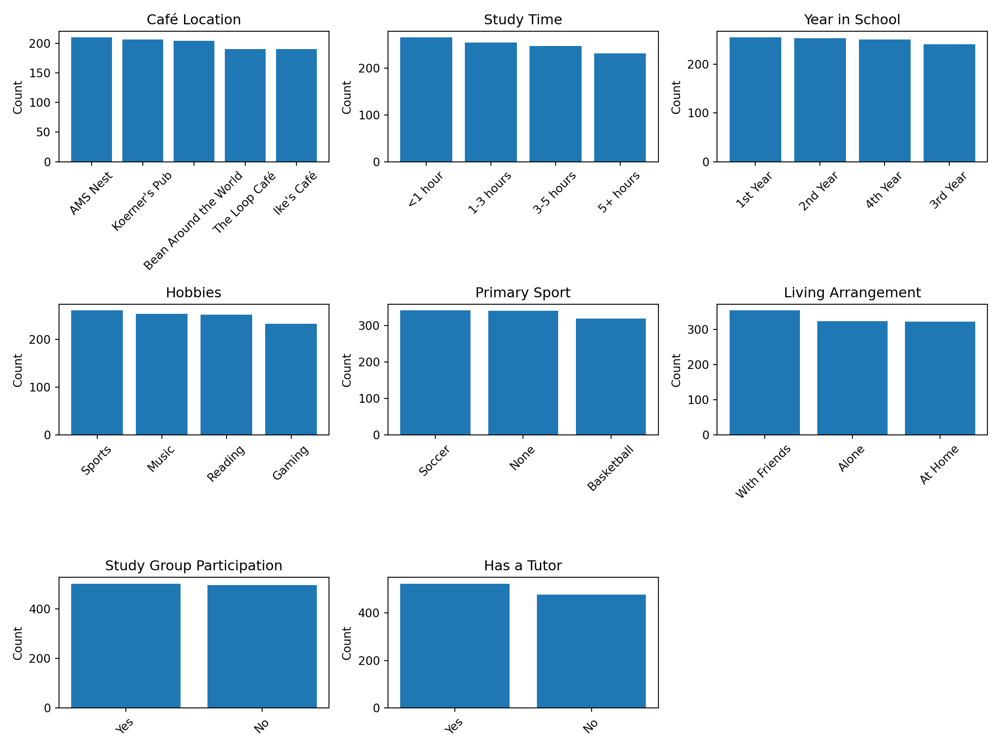
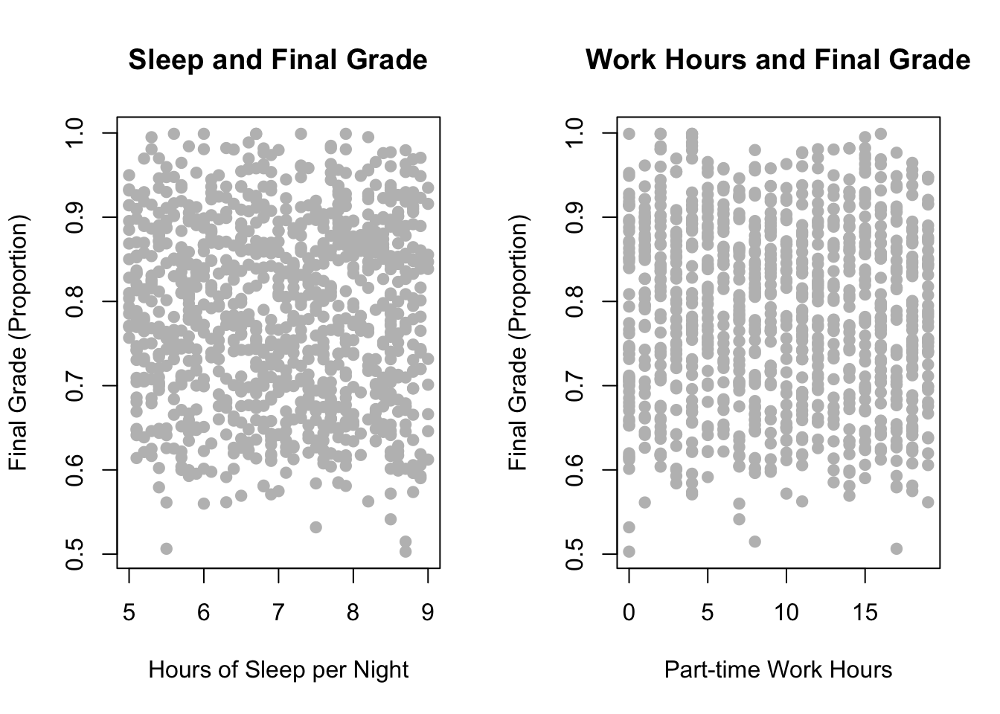
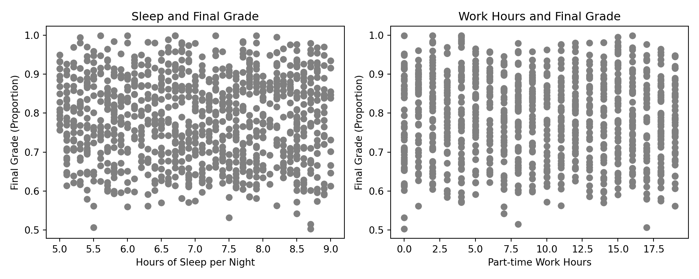
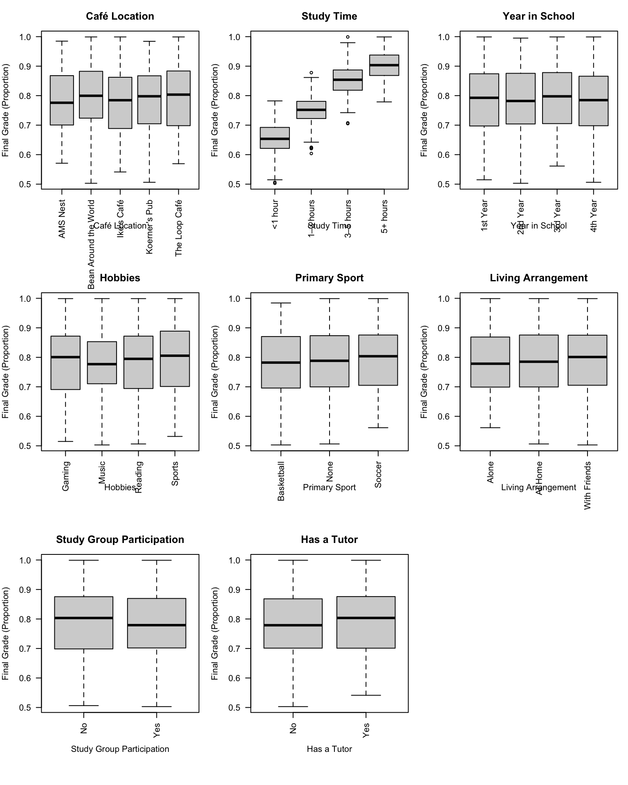
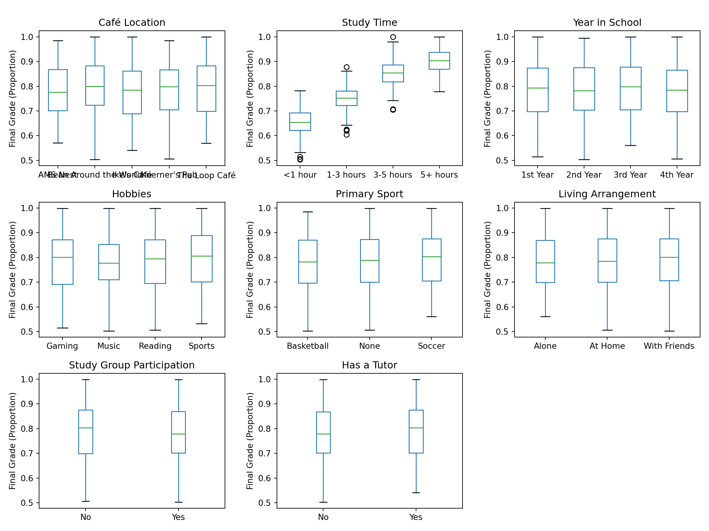

(0.0, 1.0)
Learning Objectives
By the end of this chapter, you will be able to:
Many real world problems involve modeling proportions. A common example is a website conversion rate, where each page is associated with a value between zero and one that represents the fraction of visitors who complete a purchase. Some pages convert only a small share of visitors, while others perform much better. Although these values are numerical and continuous, they are also restricted to a fixed range. A suitable model must respect these limits and reflect the fact that variability often changes depending on the average level of the proportion.
Traditional linear regression is not well suited for this type of data. It can produce predictions outside the valid range and assumes that variability is constant across all observations. Problems like this call for a regression approach that is designed specifically for proportion outcomes. This is exactly where Beta regression comes to shine.
Beta regression is a regression model designed for situations where the response variable is a proportion that takes values on the open interval between zero and one. Instead of modeling the response directly as a straight line, Beta regression assumes that the response follows a Beta distribution. This distribution is defined only on the zero to one interval and is flexible enough to represent many different shapes.
Because of this flexibility, Beta regression is well suited for data such as conversion rates, completion rates, coverage percentages, or any outcome that represents a fraction of a whole. The model naturally respects the bounds of the data and avoids unrealistic predictions.
The Beta distribution is a continuous probability distribution defined on the interval between zero and one. A key feature of this distribution is its flexibility. Depending on its parameter values, it can take many shapes, including symmetric, left skewed, or right skewed forms, as well as distributions that place more mass near the boundaries.
(0.0, 1.0)
The figure above shows several examples of Beta distributions with different parameter choices. Although the shapes vary widely, all distributions remain within the zero to one range, making the Beta distribution a natural choice for modeling proportion data.
The shape of a Beta distribution is controlled by two parameters, commonly called alpha and beta. When alpha is larger than beta, values tend to be closer to one. When beta is larger than alpha, values tend to be closer to zero. When the two parameters are similar, values cluster around the middle of the range. Together, alpha and beta also influence how spread out the data are, with smaller values producing more variability and larger values leading to tighter concentration around the average.
In practice, working directly with alpha and beta is not very convenient for regression modeling. These parameters describe the shape of the distribution, but they do not directly tell us how the average proportion changes when a predictor changes. To address this, Beta regression rewrites the distribution in terms of quantities that are easier to interpret, such as the average proportion and how tightly the data cluster around that average. This reexpression allows the model to relate the average proportion to predictor variables while still ensuring that all fitted values remain between zero and one. We explore this idea in more detail in the next section.
In the Gamma regression chapter, we introduced generalized linear models as a way to extend linear regression to response variables that do not follow a normal distribution. Beta regression follows the same framework and is another example of a generalized linear model, designed specifically for proportion data.
As with other generalized linear models, Beta regression does not model the response directly. Instead, it models the average of the response through a transformation that allows predictor variables to be related to the outcome using a familiar linear structure. This approach is especially important for proportion data, since the average must always remain between zero and one.
A Quick Refresh on GLMs
Generalized linear models are built from three components.
These three pieces work together to extend linear regression to a wide range of response types.
For Beta regression, the three components of GLM take the following form.
Random component: The response variable is assumed to follow a Beta distribution. This choice reflects the fact that the outcome is continuous and bounded between zero and one.
Systematic component: Predictor variables are combined through a linear predictor. This part of the model describes how changes in the predictors are associated with changes in the average proportion.
Link function: The link function connects the linear predictor to the average proportion. Its role is to ensure that the modeled average remains between zero and one. A commonly used choice is the logit function, which maps proportions to the real line and is also used in logistic regression.
Putting the three components together, the Beta regression model can be written in mathematical form.
For each observation \(i\), the response variable is assumed to follow a Beta distribution,
\[ Y_i \sim \text{Beta}(\mu_i \phi,\ (1 - \mu_i)\phi) \] Here, \(\mu_i\) represents the average proportion for observation \(i\), and \(\phi\) is a parameter that controls how tightly the data cluster around that average. Larger values of \(\phi\) correspond to less variability, while smaller values allow for more spread.
The average proportion \(\mu_i\) is then linked to the predictors through a linear predictor using a link function. With the logit link, this takes the form
\[ \begin{aligned} \text{logit}(\mu_i) &= \log\left(\frac{\mu_i}{1-\mu_i}\right) \\ &= \eta_i \\ &= \beta_0 + \beta_1 x_{i1} + \cdots + \beta_p x_{ip} \end{aligned} \]
Here, \(\beta_0\) is the intercept and represents the baseline value of the transformed average proportion when all predictors are set to zero. The remaining coefficients \(\beta_1, ..., \beta_p\) describe the association between each predictor and the average proportion on the logit scale, holding all other predictors constant. A positive coefficient indicates that larger values of the predictor are associated with a higher average proportion, while a negative coefficient indicates the opposite.
This formulation follows the same generalized linear model structure introduced in the Gamma regression chapter. The random component specifies the distribution of the response, the systematic component combines predictors through a linear predictor, and the link function connects the linear predictor to the average of the response. Together, these components allow Beta regression to model proportion data in a flexible and interpretable way, while ensuring that fitted values always remain between zero and one.
To demonstrate Beta regression in action, we will walk through a case study using a toy dataset that captures student academic performance. In this case study, our response variable is a final course grade, expressed as a percentage.
Because grades represent proportions that lie between zero and one hundred percent, they are naturally suited for Beta regression after being rescaled to the unit interval. Our goal is to understand how different aspects of a student’s academic life and daily habits are associated with their overall performance.
We will approach this case study using the data science workflow introduced in the first chapter. This ensures a structured approach to framing the problem, exploring the data, selecting an appropriate model, and interpreting the results.
The toy dataset used in this case study represents a group of university students. Each row corresponds to a single student and includes information about study habits, lifestyle factors, and academic support. Below is a summary of the variables included in the dataset.
| Variable Name | Description |
|---|---|
| Final Grade (%) | Final course grade expressed as a percentage. |
| Café Location | Primary café or study location used by the student. |
| Study Time | Self-reported amount of time spent studying. |
| Year in School | Academic year of the student (e.g., 1st Year, 4th Year). |
| Hobbies | Primary hobby outside of school. |
| Primary Sport | Main sport played by the student, if any. |
| Living Arrangement | Living situation (e.g., alone, with friends). |
| Part-time Work Hours | Number of hours worked per week in a part-time job. |
| Study Group Participation | Whether the student participates in a study group. |
| Hours of Sleep per Night | Average number of hours of sleep per night. |
| Has a Tutor | Whether the student receives tutoring support. |
Here is a snapshot of the dataset:
| Final Grade (%) | Café Location | Study Time | Year in School | Hobbies | Primary Sport | Living Arrangement | Part-time Work Hours | Study Group Participation | Hours of Sleep per Night | Has a Tutor |
|---|---|---|---|---|---|---|---|---|---|---|
| 96.99 | Koerner’s Pub | 5+ hours | 1st Year | Sports | Soccer | With Friends | 15 | Yes | 5.4 | Yes |
| 94.62 | Bean Around the World | 5+ hours | 4th Year | Gaming | Soccer | Alone | 7 | Yes | 5.4 | No |
| 90.30 | The Loop Café | 5+ hours | 2nd Year | Sports | None | Alone | 6 | No | 5.6 | Yes |
| 86.77 | Bean Around the World | 5+ hours | 1st Year | Reading | Basketball | Alone | 10 | No | 7.8 | No |
This dataset allows us to examine how academic behaviors and lifestyle choices are associated with student performance, while respecting the proportional nature of the outcome.
In this case study, our goal is to understand what factors are associated with higher or lower final grades. Since grades are continuous, bounded, and naturally interpreted as proportions, Beta regression is a suitable modeling choice.
The key question we aim to answer is:
Which academic and lifestyle factors are associated with differences in students’ final grades?
Rather than focusing only on prediction, we are interested in understanding how study habits, support systems, and daily routines relate to academic outcomes. In the next section, we clarify our study design and begin applying the data science workflow to this problem.
Just like we discussed above, our goal is to understand how academic and lifestyle factors are associated with students’ final grades.
At this stage, we focus on clearly defining the type of question we are asking and how it fits into the data science workflow, rather than introducing new modeling details.
In particular, this is an inferential task. We are interested in describing and interpreting relationships between variables, rather than building a model purely for prediction. A predictive approach would be possible, but our primary objective here is to gain insight into how different factors relate to student performance.
With our statistical question clearly defined, the next step is to ensure that the data is suitable for analysis. Although the dataset is already provided, it is still useful to reflect briefly on how this type of data might have been collected. Doing so helps clarify what the data represents and highlights potential limitations before moving on to preparation and modeling.
For a study examining student academic performance, data like this could reasonably be collected through several common sources:
Academic Records: Final grades are typically recorded by instructors or academic departments at the end of a course. These records provide a standardized and reliable measure of student performance.
Student Surveys: Information on study habits, sleep, part-time work, tutoring, and study group participation is often collected through self-reported surveys. While this data provides valuable context, it may be subject to reporting bias or measurement error.
Institutional Data Systems: Universities often combine academic records with student support and enrollment information, such as year in school or participation in academic programs.
Each of these sources comes with trade-offs. Academic records are objective but limited to performance outcomes, while survey-based variables may be noisy but offer insight into behaviors and lifestyle factors. Recognizing these limitations helps guide both exploratory analysis and interpretation later on.
Once the data has been collected, the next step is to prepare it for modeling. Even small, well-structured datasets often require preprocessing before they can be analyzed effectively.
For Beta regression, data wrangling typically involves:
Based on the data, there can, of course, be other things you may have to do but for now, let’s walk through these steps using our student performance dataset, demonstrating each step in both R and Python.
In this case study, the response variable is the final course grade, recorded as a percentage. While this variable is continuous, it is currently measured on a scale from 0 to 100. Since Beta regression models proportions, the response must first be rescaled to lie between zero and one.
Before rescaling, we begin by examining the distribution of final grades to confirm that the values are within a reasonable range.
summary(data$`Final Grade (%)`) Min. 1st Qu. Median Mean 3rd Qu. Max.
50.30 70.10 79.00 78.63 87.17 100.00 The summary confirms that all grades lie between 0 and 100, making them suitable for conversion to proportions. We therefore rescale the response by dividing each value by 100.
data$final_grade_prop <- data$`Final Grade (%)` / 100
# Drop original percentage column
data$`Final Grade (%)` <- NULL
summary(data$final_grade_prop) Min. 1st Qu. Median Mean 3rd Qu. Max.
0.5030 0.7010 0.7900 0.7863 0.8717 1.0000 Heads-up!
At this stage, the structure of the response variable already suggests that a proportion-based model, such as Beta regression, will be a good fit. With that in mind, we perform the preprocessing needed for such a model here. In practice, this decision is often informed by exploratory analysis and may be revisited later, but introducing it now helps keep the workflow clear and focused.
After rescaling, the response variable now lies on the unit interval. The next step is to check whether any values are exactly zero or one, since standard Beta regression assumes outcomes are strictly between these boundaries.
Beta regression requires that the response variable take values strictly between zero and one. We therefore check whether any rescaled grades are exactly equal to zero or one.
Shoot! The checks reveal that there are several observations with values equal to one. While this is not unusual for percentage-based data, it poses a problem for standard Beta regression, which assumes the response lies strictly between zero and one.
Heads-up!
When proportion data includes values exactly equal to zero or one, the assumptions of standard Beta regression are violated. This situation is common in practice, especially when proportions are derived from percentages or rounded measurements. There are several principled ways to handle boundary values, each with different trade-offs.
One approach is boundary adjustment, where values equal to zero or one are shifted slightly inward by a small amount. This method is simple, preserves the ordering of observations, and allows standard Beta regression to be applied without adding model complexity. It is often appropriate when boundary values arise from rounding or measurement limits rather than representing a fundamentally different process.
A second approach, proposed by Smithson and Verkuilen (2006), applies a systematic transformation to the response variable. Instead of only adjusting values at the boundaries, this method gently shifts all observations so that none of them are exactly zero or one.
Intuitively, the transformation treats the observed proportions as slightly uncertain and pulls extreme values a small distance toward the interior of the interval. This avoids hard cutoffs at zero and one while preserving the relative ordering of the data.
Mathematically, the transformation can be written as \[ x' = \frac{x (N - 1) + s}{N} \]
where \(N\) is the sample size and \(s\) is a small constant between 0 and 1, often chosen as \(s=0.5\).
One way to think about this adjustment is that it spreads the data evenly across the open interval \((0,1)\), ensuring that no observation lies exactly on the boundaries. From a Bayesian perspective (for the Bayesianists out there), the constant \(s\) can be interpreted as introducing a weak prior that prevents extreme values from being taken at face value. In practice, this approach is often viewed as more principled than manually nudging boundary values, though it also adds an extra layer of abstraction.
Another option is to use zero–one–inflated Beta models, which explicitly treat boundary values as arising from a separate process. These models are more flexible and appropriate when zeros or ones occur frequently and carry substantive meaning, but they also introduce additional parameters and complexity.
Finally, boundary observations can be excluded, though this is generally discouraged unless there is a strong substantive justification, as it removes potentially informative data.
In this case study, our goal is to focus on the core ideas of Beta regression and to keep the workflow accessible. Because the number of boundary values is small and likely driven by rounding of high grades, we proceed with a simple boundary adjustment and continue with standard Beta regression.
epsilon <- 0.001
data$final_grade_prop[data$final_grade_prop >= 1] <- 1 - epsilon
data$final_grade_prop[data$final_grade_prop <= 0] <- epsilon
summary(data$final_grade_prop) Min. 1st Qu. Median Mean 3rd Qu. Max.
0.5030 0.7010 0.7900 0.7863 0.8717 0.9990 After this adjustment, all response values lie strictly between zero and one, making the data suitable for Beta regression.
Several variables in the dataset are categorical, such as café location, year in school, hobbies, living arrangement, study group participation, and tutoring status. Regression models, including Beta regression, require numerical inputs, so these variables must be converted into a suitable numerical representation. We use one-hot encoding for this purpose.
As a quick refresh, one-hot encoding represents each category as a binary indicator variable. For a given categorical feature, each level becomes its own column that takes the value 1 when an observation belongs to that category and 0 otherwise. To avoid redundancy, one category is typically omitted and treated as the reference level.
# Convert categorical variables to factors
categorical_vars <- c(
"Café Location",
"Study Time",
"Year in School",
"Hobbies",
"Primary Sport",
"Living Arrangement",
"Study Group Participation",
"Has a Tutor"
)
data[categorical_vars] <- lapply(data[categorical_vars], as.factor)
# Create design matrix with dummy variables
design_matrix <- model.matrix(
final_grade_prop ~ .,
data = data
)
head(design_matrix) (Intercept) `Café Location`Bean Around the World `Café Location`Ike's Café
1 1 0 0
2 1 1 0
3 1 0 0
4 1 1 0
5 1 1 0
6 1 0 1
`Café Location`Koerner's Pub `Café Location`The Loop Café
1 1 0
2 0 0
3 0 1
4 0 0
5 0 0
6 0 0
`Study Time`1–3 hours `Study Time`3–5 hours `Study Time`5+ hours
1 0 0 1
2 0 0 1
3 0 0 1
4 0 0 1
5 0 0 1
6 0 0 0
`Year in School`2nd Year `Year in School`3rd Year `Year in School`4th Year
1 0 0 0
2 0 0 1
3 1 0 0
4 0 0 0
5 0 0 1
6 0 0 1
HobbiesMusic HobbiesReading HobbiesSports `Primary Sport`None
1 0 0 1 0
2 0 0 0 0
3 0 0 1 1
4 0 1 0 0
5 0 1 0 1
6 0 0 0 0
`Primary Sport`Soccer `Living Arrangement`At Home
1 1 0
2 1 0
3 0 0
4 0 0
5 0 0
6 1 1
`Living Arrangement`With Friends `Part-time Work Hours`
1 1 15
2 0 7
3 0 6
4 0 10
5 0 6
6 0 9
`Study Group Participation`Yes `Hours of Sleep per Night` `Has a Tutor`Yes
1 1 5.4 1
2 1 5.4 0
3 0 5.6 1
4 0 7.8 0
5 1 9.0 1
6 1 7.5 0import pandas as pd
categorical_vars = [
"Café Location",
"Study Time",
"Year in School",
"Hobbies",
"Primary Sport",
"Living Arrangement",
"Study Group Participation",
"Has a Tutor"
]
s = data["Study Time"].astype("string")
# Replace en dash/em dash/minus with normal hyphen
s = s.str.replace(r"[–—−]", "-", regex=True).str.strip()
study_time_order = ["<1 hour", "1-3 hours", "3-5 hours", "5+ hours"]
data["Study Time"] = pd.Categorical(
s,
categories=study_time_order,
ordered=True
)
# One-hot encode
data_encoded = pd.get_dummies(
data,
columns=categorical_vars,
drop_first=True,
dtype=float # or dtype=int
)
data_encoded.head()After encoding, each categorical variable is represented numerically, making the dataset suitable for regression modeling. The resulting design matrix includes one column per predictor, with categorical effects interpreted relative to a reference category. We return to this point when interpreting the fitted model.
A useful step before any analysis is to check for missing data. Missing values can affect model fitting and interpretation, especially when the dataset is small.
Fortunately, there are no missing values in this dataset. If missing values were present, several options would be available, including removing affected observations, imputing values, or revisiting how the data was collected. The appropriate choice depends on the extent and nature of the missingness, as well as the goals of the analysis.
Heads-up!
In addition to missing values, it is also good practice to scan for obvious inconsistencies, such as unexpected category labels or implausible numeric values. Earlier steps have already verified that the response variable lies within the required range. In a larger or messier dataset, it would also be sensible to check whether predictors such as hours of sleep or part-time work hours fall within reasonable bounds. We omit these additional checks here to keep the example focused, but the same principles apply in more complex analyses.
With the data cleaned and prepared, we now turn to our next step in our data science workflow: exploratory data analysis (EDA). The goal of this step is not to draw final conclusions, but to develop intuition about the response variable and its relationship with key predictors.
We begin by examining the distribution of the final grade, expressed as a proportion. This helps us assess whether the response is bounded, skewed, or clustered near the boundaries.
hist(
data$final_grade_prop,
breaks = 10,
main = "Distribution of Final Grades",
xlab = "Final Grade (Proportion)",
col = "lightgray",
border = "white"
)
The histogram, once again, shows that grades are continuous and bounded between zero and one, with the overall distribution being slightly left skewed. Great to see that students are mostly doing well here!
Let’s also examine the distributions of the predictor variables. This helps us understand the range, balance, and structure of the inputs before moving on to modeling. For continuous predictors, we stick to histograms to inspect their spread and shape. For categorical predictors, bar charts are sufficient to show how observations are distributed across categories.
We begin with the continuous predictors: hours of sleep per night and part-time work hours.
par(mfrow = c(1, 2))
x <- data$`Hours of Sleep per Night`
br <- seq(min(x), max(x), length.out = 11)
# bins 1..10, with last bin including the rightmost edge like NumPy
bin_id <- findInterval(x, br, rightmost.closed = TRUE, all.inside = TRUE)
counts_like_numpy <- tabulate(bin_id, nbins = 10)
# Plot the histogram manually so the bar heights match counts_like_numpy exactly
plot(NA,
xlim = range(br),
ylim = c(0, max(counts_like_numpy, na.rm = TRUE)),
main = "Hours of Sleep per Night",
xlab = "Hours",
ylab = "Frequency",
xaxt = "n"
)
axis(1)
rect(
xleft = br[-length(br)],
ybottom = 0,
xright = br[-1],
ytop = counts_like_numpy,
col = "lightgray",
border = "white"
)
hist(
data$`Part-time Work Hours`,
breaks = seq(
min(data$`Part-time Work Hours`),
max(data$`Part-time Work Hours`),
length.out = 11
),
main = "Part-time Work Hours",
xlab = "Hours per Week",
col = "lightgray",
border = "white"
)
import matplotlib.pyplot as plt
fig, axes = plt.subplots(1, 2, figsize=(10, 4))
axes[0].hist(data["Hours of Sleep per Night"], bins=10)
axes[0].set_title("Hours of Sleep per Night")
axes[0].set_xlabel("Hours")
axes[0].set_ylabel("Frequency")
axes[1].hist(data["Part-time Work Hours"], bins=10)
axes[1].set_title("Part-time Work Hours")
axes[1].set_xlabel("Hours per Week")
plt.tight_layout()
plt.show()
Heads-up!
The R code for Hours of Sleep per Night is intentionally more detailed than usual. This alternative approach ensures that the histogram uses the same bin boundaries and bin-assignment rules as Python, so the two plots are directly comparable. In practice, R’s default hist() function is usually sufficient.
Overall, both hours of sleep per night and part-time work hours appear to be approximately uniformly distributed, with no strong skewness or extreme concentration in specific ranges. This suggests that neither predictor is dominated by a narrow subset of values, which is helpful for subsequent regression modeling.
For categorical predictors, histograms are no longer appropriate. Instead, we use bar charts to visualize how observations are distributed across categories. This allows us to quickly check whether certain groups are under-represented, over-represented, or potentially imbalanced.
par(mfrow = c(3, 3), mar = c(7, 4, 3, 1))
categorical_vars <- c(
"Café Location",
"Study Time",
"Year in School",
"Hobbies",
"Primary Sport",
"Living Arrangement",
"Study Group Participation",
"Has a Tutor"
)
for (v in categorical_vars) {
barplot(
table(data[[v]]),
main = v,
ylab = "Count",
col = "lightgray",
border = "white",
las = 2
)
}
par(mfrow = c(1, 1))
import matplotlib.pyplot as plt
categorical_vars = [
"Café Location",
"Study Time",
"Year in School",
"Hobbies",
"Primary Sport",
"Living Arrangement",
"Study Group Participation",
"Has a Tutor"
]
fig, axes = plt.subplots(3, 3, figsize=(12, 9))
axes = axes.flatten()
for i, var in enumerate(categorical_vars):
counts = data[var].value_counts()
axes[i].bar(counts.index.astype(str), counts.values)
axes[i].set_title(var)
axes[i].set_ylabel("Count")
axes[i].tick_params(axis="x", rotation=45)
# Turn off unused panels (9 total, 8 used)
for j in range(len(categorical_vars), len(axes)):
axes[j].axis("off")
plt.tight_layout()
plt.show()
Overall, the categorical predictors appear to be well balanced across their respective levels. No single category overwhelmingly dominates the dataset, and each level is represented by a reasonable number of observations. This balance is desirable in a regression setting, as it ensures that comparisons between categories are supported by sufficient data and reduces the risk of unstable or highly variable coefficient estimates.
So far, we have examined each variable individually. While univariate visualizations are useful for understanding distributions and balance, they provide limited insight into how predictors relate to the response variable. To build intuition about these relationships, we now turn to bivariate exploratory analysis, where predictors and the response are examined together. In what follows, we explore the relationship between the response and continuous predictors, followed by the relationship between the response and categorical predictors.
When both the predictor and the response are continuous, scatterplots are a natural and effective visualization choice. Scatterplots allow us to inspect the form of the relationship, assess potential nonlinearity, and identify unusual observations or outliers.
par(mfrow = c(1, 2))
plot(
data$`Hours of Sleep per Night`,
data$final_grade_prop,
xlab = "Hours of Sleep per Night",
ylab = "Final Grade (Proportion)",
main = "Sleep and Final Grade",
pch = 19,
col = "gray"
)
plot(
data$`Part-time Work Hours`,
data$final_grade_prop,
xlab = "Part-time Work Hours",
ylab = "Final Grade (Proportion)",
main = "Work Hours and Final Grade",
pch = 19,
col = "gray"
)
import matplotlib.pyplot as plt
fig, axes = plt.subplots(1, 2, figsize=(10, 4))
axes[0].scatter(
data["Hours of Sleep per Night"],
data["final_grade_prop"],
color="gray"
)
axes[0].set_xlabel("Hours of Sleep per Night")
axes[0].set_ylabel("Final Grade (Proportion)")
axes[0].set_title("Sleep and Final Grade")
axes[1].scatter(
data["Part-time Work Hours"],
data["final_grade_prop"],
color="gray"
)
axes[1].set_xlabel("Part-time Work Hours")
axes[1].set_ylabel("Final Grade (Proportion)")
axes[1].set_title("Work Hours and Final Grade")
plt.tight_layout()
plt.show()
At first glance, the scatterplots do not reveal a strong or obvious relationship between either continuous predictor and the final grade proportion. The points are widely dispersed, and no clear linear trend is immediately apparent. This suggests that, on their own, hours of sleep per night and part-time work hours may not have a simple or direct association with student performance.
However, this observation should be treated as hypothesis-generating rather than conclusive. Scatterplots reflect raw, unadjusted relationships and do not account for the influence of other variables in the dataset. It is therefore possible that these predictors matter only in combination with other factors, or that their effects become apparent after controlling for confounding variables in a regression model.
When the predictor is categorical and the response is continuous, scatterplots are no longer appropriate. Instead, we compare the distribution of the response across groups defined by the categorical variable. Boxplots are a convenient choice because they summarize the center, spread, and potential outliers of the response within each category.
par(mfrow = c(3, 3), mar = c(7, 4, 3, 1))
categorical_vars <- c(
"Café Location",
"Study Time",
"Year in School",
"Hobbies",
"Primary Sport",
"Living Arrangement",
"Study Group Participation",
"Has a Tutor"
)
for (v in categorical_vars) {
boxplot(
data$final_grade_prop ~ data[[v]],
main = v,
ylab = "Final Grade (Proportion)",
xlab = v,
col = "lightgray",
las = 2
)
}
par(mfrow = c(1, 1))
import matplotlib.pyplot as plt
categorical_vars = [
"Café Location",
"Study Time",
"Year in School",
"Hobbies",
"Primary Sport",
"Living Arrangement",
"Study Group Participation",
"Has a Tutor"
]
fig, axes = plt.subplots(3, 3, figsize=(12, 9))
axes = axes.flatten()
for i, var in enumerate(categorical_vars):
data.boxplot(
column="final_grade_prop",
by=var,
ax=axes[i],
grid=False
)
axes[i].set_title(var)
axes[i].set_xlabel("")
axes[i].set_ylabel("Final Grade (Proportion)")
# Turn off unused panel
for j in range(len(categorical_vars), len(axes)):
axes[j].axis("off")
plt.suptitle("")
plt.tight_layout()
plt.show()
From the plots, we observe that study time is the only predictor with a clearly visible positive association with final grade. This finding is largely unsurprising and aligns well with common intuition: students who devote more time to studying tend to perform better academically.
At the same time, it is somewhat unexpected that the remaining categorical variables show little evidence of a strong marginal relationship with the response. Factors such as tutoring status, study group participation, living arrangement, or extracurricular interests might reasonably be expected to influence academic performance, yet no clear or consistent differences emerge when these variables are examined in isolation.
These observations are intriguing but should be interpreted with caution. The analysis at this stage is purely exploratory and reflects only superficial, marginal relationships. While these insights help guide our expectations, no substantive conclusions can be drawn until formal modeling is conducted, where the effects of multiple predictors can be assessed simultaneously.
After exploring the data and developing initial intuition through EDA, we now turn to the modeling stage. The purpose of this step is to formalize the relationships we observed and assess how different academic and lifestyle factors are associated with students’ final grades when considered jointly.
The choice of regression model should follow directly from what we have learned about the response variable and from the goals of the analysis.
In this case, the response variable, final_grade_prop, represents a student’s final grade expressed as a proportion. After preprocessing, all values lie strictly between zero and one. The EDA also showed that grades are not symmetrically distributed and tend to cluster toward higher values, with variability that appears to depend on the average grade level.
Equally important, our goal is not to predict future grades as accurately as possible, but to understand how study habits, lifestyle factors, and forms of academic support are associated with students’ performance.
Taken together, these considerations point toward Beta regression as an appropriate modeling choice. Beta regression is designed specifically for proportion data and naturally respects the bounds of the response. It allows the mean of the response to depend on predictors while accommodating heteroskedasticity, which is common in proportional outcomes.
By contrast, Ordinary Least Squares assumes constant variance and does not constrain predictions to the unit interval. These assumptions are difficult to justify for grade data, making OLS a less suitable option for this analysis.
With the modeling framework selected, the next step is to specify which variables to include. In this case study, we include all available predictors to capture a broad and realistic picture of student life.
The predictors reflect multiple dimensions of a student’s experience, including time allocation (such as study time, sleep, and part-time work hours), academic context (such as year in school), and sources of support (such as tutoring and study group participation), as well as several categorical variables describing personal routines and preferences.
Including the full set of predictors allows us to examine the association between each factor and the average final grade while holding other variables constant. This multivariable perspective is especially important given that most predictors showed weak marginal relationships during EDA but may still play a role once considered together.
Using Beta regression with a logit link, we model the average final grade proportion as a function of the predictors.
For each student \(i\), the response is assumed to follow a Beta distribution,
\[ Y_i \sim \text{Beta}(\mu_i \phi,\ (1 - \mu_i)\phi) \]
where \(\mu_i\) denotes the average grade proportion and \(\phi\) controls how concentrated grades are around that average.
The average proportion is linked to the predictors through the linear predictor:
\[ \begin{aligned} \text{logit}(\mu_i) &= \beta_0 \\ &\quad + \beta_1 \times \text{part\_time\_work\_hours}_i \\ &\quad + \beta_2 \times \text{hours\_of\_sleep}_i \\ &\quad + \text{(terms for Study Time)} \\ &\quad + \text{(terms for Café Location)} \\ &\quad + \text{(terms for Year in School)} \\ &\quad + \text{(terms for Hobbies)} \\ &\quad + \text{(terms for Primary Sport)} \\ &\quad + \text{(terms for Living Arrangement)} \\ &\quad + \text{(terms for Study Group Participation)} \\ &\quad + \text{(terms for Has a Tutor)} \end{aligned} \]
The logit link maps the average grade proportion to the real line, allowing predictors to enter the model in a familiar linear form. Once the linear predictor is computed, we can return to the original grade scale using the inverse-logit transformation,
\[ \mu_i = \frac{\exp(\eta_i)}{1 + \exp(\eta_i)} \]
where \(\eta_i\) represents the linear combination of predictors.
Under this model, each coefficient describes how a predictor is associated with changes in the average final grade, on the logit scale, holding all other variables constant. Positive coefficients correspond to higher expected grades, while negative coefficients correspond to lower expected grades.
With the model structure defined, we are now ready to estimate the model parameters and examine how these academic and lifestyle factors relate to student performance in practice.
With the model structure clearly defined, we now move on to estimation. In this step, we fit the Beta regression model to the data and obtain numerical estimates for each coefficient. These estimates allow us to quantify how different academic and lifestyle factors are associated with students’ average final grades under the specified model.
How Beta Regression Is Fit
Like Gamma regression, Beta regression is typically estimated using maximum likelihood estimation (MLE). Rather than minimizing squared errors, MLE finds the parameter values that make the observed proportions most likely under the assumed Beta distribution. This approach naturally accounts for the bounded nature of the response and the relationship between the mean and variability.
In R, Beta regression can be fit using the betareg() function, which is designed specifically for proportion outcomes. In Python, Beta regression is available through statsmodels, allowing us to specify the same link function and modeling structure.
library(betareg)
# Fit Beta regression model with logit link
beta_model <- betareg(
final_grade_prop ~ .,
data = data
)
# Display model summary
summary(beta_model)
Call:
betareg(formula = final_grade_prop ~ ., data = data)
Quantile residuals:
Min 1Q Median 3Q Max
-2.6021 -0.6404 -0.0795 0.4838 6.7978
Coefficients (mean model with logit link):
Estimate Std. Error z value Pr(>|z|)
(Intercept) 0.6665207 0.0888619 7.501 6.35e-14 ***
`Café Location`Bean Around the World 0.0504412 0.0372442 1.354 0.176
`Café Location`Ike's Café 0.0065107 0.0370293 0.176 0.860
`Café Location`Koerner's Pub 0.0047134 0.0362279 0.130 0.896
`Café Location`The Loop Café 0.0055751 0.0375507 0.148 0.882
`Study Time`1–3 hours 0.4579250 0.0290849 15.744 < 2e-16 ***
`Study Time`3–5 hours 1.1301265 0.0327078 34.552 < 2e-16 ***
`Study Time`5+ hours 1.7063296 0.0385853 44.222 < 2e-16 ***
`Year in School`2nd Year 0.0439984 0.0331393 1.328 0.184
`Year in School`3rd Year 0.0260794 0.0338020 0.772 0.440
`Year in School`4th Year 0.0161057 0.0332232 0.485 0.628
HobbiesMusic -0.0213915 0.0337388 -0.634 0.526
HobbiesReading 0.0317771 0.0341174 0.931 0.352
HobbiesSports 0.0212625 0.0340996 0.624 0.533
`Primary Sport`None 0.0326562 0.0291631 1.120 0.263
`Primary Sport`Soccer 0.0245573 0.0291159 0.843 0.399
`Living Arrangement`At Home -0.0055100 0.0294296 -0.187 0.851
`Living Arrangement`With Friends -0.0119983 0.0287634 -0.417 0.677
`Part-time Work Hours` -0.0008363 0.0020272 -0.413 0.680
`Study Group Participation`Yes 0.0234348 0.0237683 0.986 0.324
`Hours of Sleep per Night` -0.0144863 0.0102243 -1.417 0.157
`Has a Tutor`Yes 0.0240666 0.0239712 1.004 0.315
Phi coefficients (precision model with identity link):
Estimate Std. Error z value Pr(>|z|)
(phi) 43.98 1.96 22.44 <2e-16 ***
---
Signif. codes: 0 '***' 0.001 '**' 0.01 '*' 0.05 '.' 0.1 ' ' 1
Type of estimator: ML (maximum likelihood)
Log-likelihood: 1475 on 23 Df
Pseudo R-squared: 0.6014
Number of iterations: 36 (BFGS) + 2 (Fisher scoring) Based on the output, the (partially shown) fitted equation is:
\[ \begin{aligned} \text{logit}(\mu_i) &= 0.665 \\ &\quad + -0.0008 \times \text{part_time_work_hours}_i \\ &\quad + -0.0145 \times \text{hours_of_sleep}_i \\ &\quad + \text{(terms for Study Time)} \\ &\quad + \text{(terms for Café Location)} \\ &\quad + \text{(terms for Year in School)} \\ &\quad + \text{(terms for Hobbies)} \\ &\quad + \text{(terms for Primary Sport)} \\ &\quad + \text{(terms for Living Arrangement)} \\ &\quad + \text{(terms for Study Group Participation)} \\ &\quad + \text{(terms for Has a Tutor)} \end{aligned} \]
While we can interpret the numbers given here, but before that, we should always check goodness of fit first. If the goodness of fit is bad, then the interpretation of these numbers could be meaningless.
Assessing goodness of fit for Beta regression is conceptually similar to other generalized linear models, but there are a few important differences compared to ordinary least squares regression.
Because Beta regression is fit using maximum likelihood, overall model fit is commonly assessed using:
Higher log-likelihood values indicate a better fit, while lower AIC and BIC values suggest a preferable balance between model fit and model complexity. These metrics are especially useful when comparing multiple Beta regression models fitted to the same response variable. In our fitted model, the log-likelihood is 1474.7, the AIC is −2903, and the BIC is −2791. Although we do not compare multiple models here, these metrics become especially informative when evaluating alternative model specifications.
When using R’s betareg(), the model summary reports a pseudo-\(R^2\) value. This quantity is defined as:
\[ R^{2}_{\text{pseudo}} = 1 - \frac{\ell(\text{null model})}{\ell(\text{fitted model})} \]
where \(\ell(\cdot)\) denotes the log-likelihood. This measure quantifies how much the fitted model improves upon an intercept-only model. From the R output, the pseudo-\(R^2\) for our model is 0.6014, indicating an improvement over the null model.
Notes on pseudo-\(R^2\)
When interpreting pseudo-\(R^2\), it is important to keep the following points in mind:
In contrast, Python’s statsmodels.BetaModel does not report a pseudo-\(R^2\) by default, even though the same quantity could be computed manually from the log-likelihoods. This reflects a design choice rather than a difference in the underlying statistical model.
Beta regression models not only the mean of the response but also its dispersion through a precision parameter, commonly denoted by \(\phi\). As a result, assessing goodness of fit involves evaluating not only how well the model captures the mean structure, but also whether it represents the variability in the data reasonably. Under the standard mean–precision parameterization, the conditional variance of the response is given by:
\[ \mathrm{Var}(Y_i \mid X_i) = \dfrac{\mu_i (1 - \mu_i)}{1 + \phi} \]
Larger values of \(\phi\) indicate that observations are more tightly concentrated around the fitted mean, while smaller values correspond to greater variability. A poorly estimated precision parameter may suggest that the model does not fully capture the dispersion in the response, even if the fitted means appear reasonable.
In R’s betareg(), the precision parameter is estimated directly. In this example, the fitted model reports:
\[ \hat{\phi}=43.98 \]
In contrast, Python’s statsmodels.BetaModel reports the precision parameter on a transformed (log) scale. The reported value of 3.78 corresponds to:
\[ \exp(3.78) = 43.98 \]
which aligns closely with the estimate obtained from betareg(). Thus, although the numerical values appear different, both implementations are estimating the same underlying precision parameter, and the fitted models are consistent.
Once the precision parameter \(\phi\) has been estimated, we can substitute it into the conditional variance formula to assess whether the implied variability is reasonable for the observed data. In practice, the precision parameter is best interpreted alongside residual diagnostics rather than judged by an absolute threshold. ### Residual Diagnostics
As with other generalized linear models, residual diagnostics help us check whether a Beta regression model is capturing the main patterns in the data. In this section, we focus on Pearson residuals, which compare the observed values to the fitted mean values on a standardized scale.
The plots show Pearson residuals plotted against the fitted mean values. The residuals are centered around zero across the range of fitted values, indicating no systematic over- or under-prediction. The vertical banding reflects groups of observations with similar fitted means, often arising from categorical predictors. While residual variability increases slightly for fitted means close to one, this behavior is expected for Beta regression due to the bounded nature of the response. Overall, the diagnostics suggest that the model provides an adequate fit to the data.
Great! Nothing seems particularly concerning with goodness of fit. Having established that the model fits the data reasonably well, we can now finally turn to the substantive findings, interpreting results and answering our central question:
Which aspects of students’ academic and daily routines are associated with differences in final course grades?
Recall that the model was fit using Beta regression with a logit link. As a result, coefficients describe changes in the log-odds of the mean grade proportion, rather than direct changes in grades themselves. Exponentiating a coefficient yields an odds ratio, which reflects how the odds of achieving a higher average grade change as a predictor increases, holding all other variables constant.
Because the logit link is nonlinear, these effects should be interpreted in relative terms rather than as fixed percentage-point increases. The same change in log-odds can correspond to different changes in grade proportions depending on where a student lies on the grade scale.
Among all variables included in the model, Study Time stands out as the dominant factor associated with academic performance.
Using students who study less than one hour as the reference group, we observe a clear and increasing association between reported study time and average grades:
\[ e^0.458 \approx 1.58 \]
This indicates that students who study 1–3 hours have noticeably higher odds of achieving a higher average grade than those in the baseline group.
\[ e^1.130 \approx 3.10 \]
This suggests that students in this category have roughly three times the odds of a higher mean grade compared to the reference group.
\[ e^1.706 \approx 5.51 \]
Students who study five or more hours are therefore predicted to have substantially higher average grades than those who study less than one hour.
The pattern is monotonic and strong: as reported study time increases, the model consistently predicts higher average grade proportions. This relationship remains even after adjusting for sleep, work hours, academic year, and other lifestyle variables.
In contrast, the remaining predictors in the model do not show statistically significant associations with final grades at conventional significance levels.
These include:
For example, the estimated effects of part-time work hours and sleep duration are small relative to their uncertainty, providing little evidence of a systematic relationship with grades once study time is accounted for. Similarly, variables describing where students study or whether they participate in academic support activities do not appear to differentiate average grades in this dataset.
Interpretation Reminder
It is worth emphasizing that these findings are conditional on the model specification and the available data. Lack of statistical significance does not imply that these factors are unimportant in all settings, only that the present analysis does not provide strong evidence of an association.
To complete the data science workflow, we step back from coefficients and diagnostics and focus on how the results can be interpreted and applied in practice. This final stage, storytelling, is where statistical output is translated into insights that support real-world decision-making.
In this case study, the Beta regression model helps us understand how different aspects of students’ academic lives relate to their final course grades. Rather than treating grades as isolated numbers, the model allows us to view them as outcomes shaped by study habits, routines, and context. Below, we distill the key takeaways from the analysis and discuss what they imply for students, instructors, and academic support staff.
Study time stands out as the primary driver of academic performance. Across all model specifications, higher reported study time is consistently associated with higher average grades. The relationship is not only statistically significant, but also monotonic: students who study more tend to achieve better outcomes, even after accounting for sleep, work commitments, and other lifestyle factors. This reinforces a simple but powerful message—sustained study effort plays a central role in academic success.
From a practical perspective, this suggests that interventions aimed at improving time management, study planning, and sustained engagement with course material are likely to yield meaningful benefits. Academic advisors and instructors might focus less on where or how students study, and more on helping them build realistic, consistent study routines.
Many commonly discussed lifestyle factors show little evidence of association once study time is accounted for. Variables such as hours of sleep, part-time work hours, tutoring, study group participation, and living arrangement do not display strong independent associations with final grades in this model. While these factors are often assumed to influence academic outcomes, the analysis suggests that their effects may be indirect, context-dependent, or mediated through study time itself.
This does not mean that sleep or academic support are unimportant. Rather, it suggests that their influence may be more subtle than often assumed, or that they matter most when they enable students to study more effectively. In other words, these factors may support learning indirectly rather than directly translating into higher grades.
Environment and personal preferences appear less critical than effort in this dataset. Café location, hobbies, and sports participation show no clear relationship with grades once other variables are controlled for. This finding highlights an encouraging implication: students with very different routines and preferences can achieve similar outcomes, provided they invest sufficient time and effort into studying. Academic success does not appear to be tied to a specific lifestyle or environment, but rather to how students allocate their time.
Using the Results Responsibly
It is important to remember that this analysis is associational, not causal. The model does not prove that increasing study time will automatically raise grades for every student. Instead, it shows that, in this dataset, higher study time tends to co-occur with higher average grades after accounting for other measured factors.
Nevertheless, the results provide a useful evidence-based starting point for discussion. They help prioritize which factors are most strongly linked to performance and which may play a smaller or more indirect role. For educators and institutions, this kind of insight can guide where limited resources and attention are most likely to have impact.
This chapter has walked through a complete data science workflow using Beta regression, from problem formulation and data preparation to modeling, diagnostics, and interpretation. Along the way, we have seen how Beta regression offers a principled and flexible framework for analyzing outcomes that are continuous, bounded between zero and one, and heteroskedastic.
More importantly, the chapter highlights that the value of Beta regression lies not just in fitting a model, but in using the model thoughtfully within a broader analytical process. Careful study design, appropriate preprocessing, exploratory analysis, model checking, and clear communication are what ultimately turn proportion data into actionable insight.
With these ideas in place, you are now equipped to apply Beta regression to a wide range of real-world problems, from academic performance and completion rates to conversion metrics and coverage proportions, and to communicate your findings in a way that supports informed decision-making.
Fun fact!
Soup-erb! Soup that’s so heartwarming it feels like a cozy hug.
mindmap
root((Regression
Analysis)
Continuous <br/>Outcome Y
{{Unbounded <br/>Outcome Y}}
)Chapter 3: <br/>Ordinary <br/>Least Squares <br/>Regression(
(Normal <br/>Outcome Y)
{{Nonnegative <br/>Outcome Y}}
)Chapter 4: <br/>Gamma Regression(
(Gamma <br/>Outcome Y)
{{Bounded <br/>Outcome Y <br/> between 0 and 1}}
)Chapter 5: Beta <br/>Regression(
(Beta <br/>Outcome Y)
Discrete <br/>Outcome Y
Do you consent to the use of cookies to analyze website traffic? No personally identifying information is stored. See our privacy policy here.